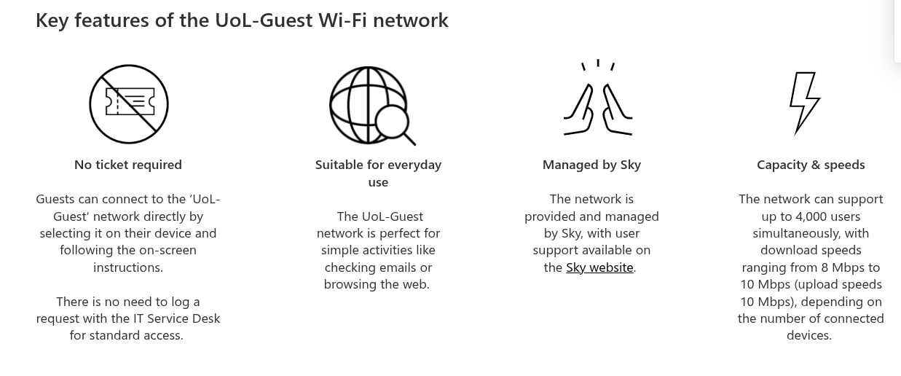
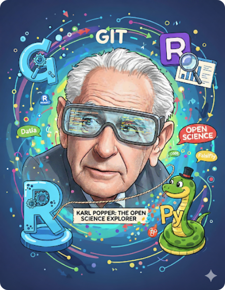
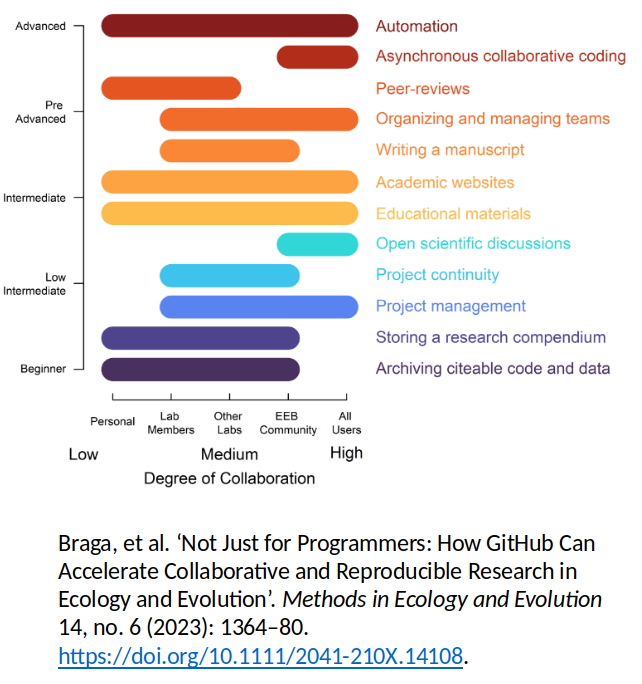
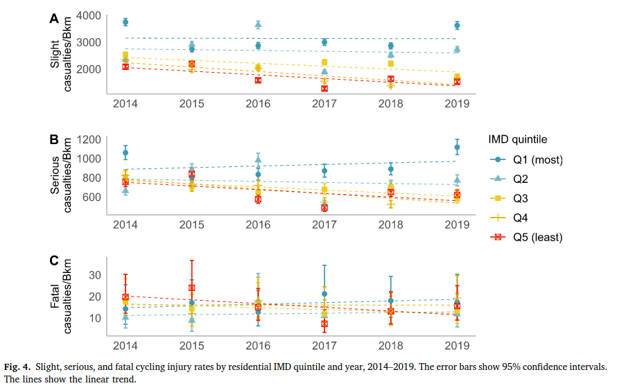
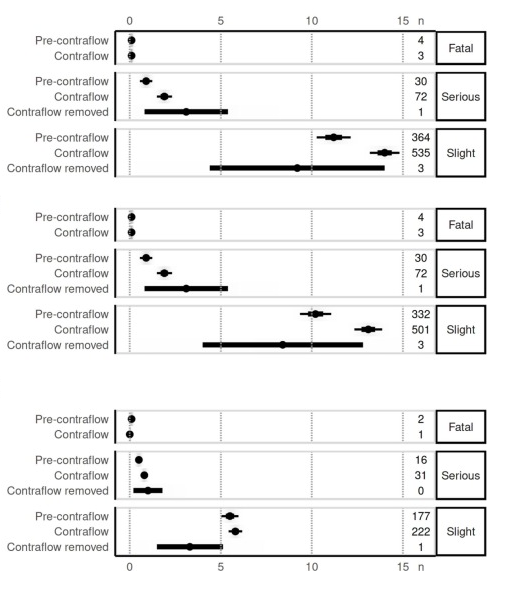
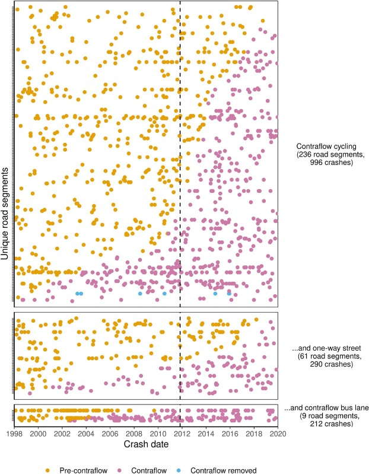

Reproducible Data Science for Road Safety Research
Professor Robin Lovelace
2025-09-02
Welcome!
Reproducible data science for road safety research
RS5C Pre-conference Workshop
2nd September 2025
Agenda
- 13:00-14:00 Networking lunch
- 14:00-14:15 Introduction to reproducible research
- 14:15-14:30 New datasets and tools (Richard Owen, Agilysis)
- 14:30-16:00 Workshop
- 16:00 onwards Networking and walk to RS5C reception
Prerequisites
To run the code
- Computer to run the code
- Either: A laptop with R, RStudio or VS Code and Docker or similar installed to run the code locally
- Or: Access to a cloud-based environment for data science (e.g., GitHub Codespaces or Posit Cloud)
Learn and share
The following will help:
- An interest in road safety and knowledge of road traffic casualty datasets
- A willingness to learn and share (LinkedIn, BlueSky, etc)
- A GitHub account (to ask questions on the Discussions page and share your own code)
- Familiarity with data science tools, e.g. R, Python, RStudio, VS Code
Housekeeping
- Connect to the UoL-Guest Wi-Fi network and enter your details.
- GitHub account sign-up if not done already.
- R and RStudio installation check, locally or in cloud environment.
WiFi
Setup check
To check you have the necessary software installed, try running the following code.
You should be able to generate the map on the next slide.
Setup check: The result
Why are we doing this?
Workshop Tasks
- Importing collision, casualty and vehicle tables (20 min)
- Temporal visualisation and aggregation (20 min)
- Spatial visualisation and aggregation (30 min)
- Joining STATS19 tables (20 min)
Task 1: Importing tables (20 min)
- Learn how to load the main STATS19 tables (collision, casualty, vehicle) using the
stats19R package. - Explore the structure and key variables in each table.
Task 2: Temporal visualisation (20 min)
- Aggregate collision data by time (e.g., by month or day of week).
- Create time series plots to identify trends and patterns.
Task 3: Spatial visualisation (30 min)
- Convert collision data to spatial format and plot on a map.
- Aggregate collisions by area (e.g., by local authority).
- Create maps to visualise spatial patterns.
See Chapter 7 on spatial data.

Task 4: Joining tables (20 min)
- Join collision, casualty, and vehicle tables to enrich your analysis.
- Explore relationships between different aspects of road traffic incidents.
Bonus tasks
For fast finishers or anyone wanting to go the extra mile:
- Create a repo and share your work on GitHub.
- Reproduce a map used in a Leeds City Council consultation.
- Analyse data to answer a new research question.
- Contribute upstream to an open source road safety project.
Output you’ll be making in Leeds-focussed bonus task


Source: Google Gemini

The Logic of Scientific Discovery
- Core Idea: Science can’t prove theories true, only prove them false.
- Falsifiability: A scientific theory must be testable and able to be disproven.
- How Science Progresses: Through conjecture (proposing theories) and refutation (trying to prove them wrong).
- Goal: Not to find “truth,” but to eliminate “untruth.”
Why reproducibility is needed for your work to be scientific
- The Test of Falsification: For a finding to be truly scientific, it must be reproducible.
- Role of Replication: A failed replication is not a failure of the researcher, but a successful attempt at falsification.
- Open Science: Popper’s ideas champion the need for transparency (open methods, data, code) so others can perform the critical tests needed to advance science.
Stages of open and reproducible science
Open access to the publications
Open access to sample (synthetic if sensitive) data
Open access to the code
Fully reproducible paper published with documentation
Project deployed in tool for non-specialist use

What can you do with reproducible research?
- Validate Findings: Others can replicate your work to confirm results.
- Build on Existing Work: Researchers can use your methods and data to explore new questions.
- Increase Trust: Transparency in research enhances credibility and trustworthiness.
- Facilitate Collaboration: Openly shared resources promote teamwork and knowledge exchange.
Example 1: Increasing inequalities in cycling casualties
Example 2: Contraflow safety (Tait et al. 2023)


Thank you!
- Questions? Get in touch via email or GitHub Discussions.
- See the course homepage at https://itsleeds.github.io/tds/reproducible-road-safety-workshop
- Interested in more teaching/research opportunities? See the upcoming course on 18th to 19th September and get in touch!
- Over to Richard Owen (Agylisis) for next presentation before practical
Tait, Caroline, Roger Beecham, Robin Lovelace, and Stuart Barber. 2023. “Contraflows and Cycling Safety: Evidence from 22 Years of Data Involving 508 One-Way Streets.” Accident Analysis & Prevention 179 (January): 106895. https://doi.org/10.1016/j.aap.2022.106895.
Vidal Tortosa, Eugeni, Robin Lovelace, Eva Heinen, and Richard P. Mann. 2021. “Socioeconomic Inequalities in Cycling Safety: An Analysis of Cycling Injury Risk by Residential Deprivation Level in England.” Journal of Transport & Health 23 (December): 101291. https://doi.org/10.1016/j.jth.2021.101291.